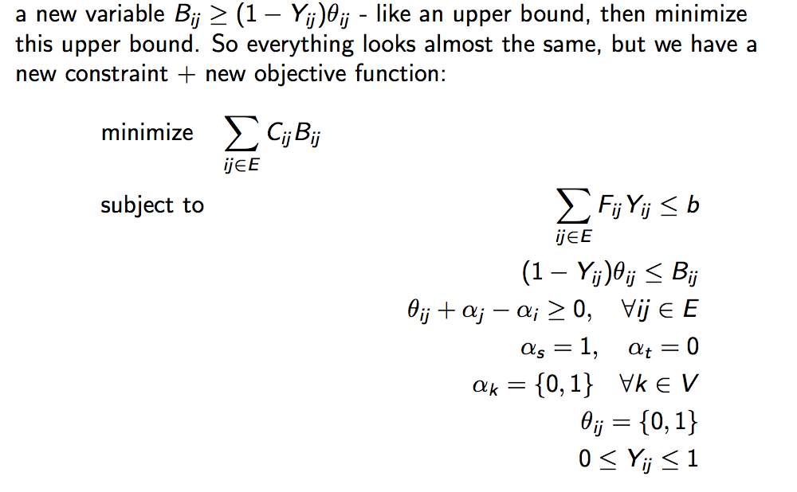

The network interdiction problem builds on the concept of maximum flow with a little twist. Imagine two opponents on a network G(V,E). An entity tries to maximize the flow of a commodity from a source s to target t. The other entity, the interdictor, tries to minimize this optimal flow. The interdictor can decrease the capacities of various edges in the graph, but at some linear cost specific to each edge.
The network interdiction problem therefore asks how decrease the edges' capacity subjected to a fixed budget so that the new maximum flow is minimized. The network interdiction problem has an important application in defense and security and is used to assess the robustness of network designs.
Linear programming is a class of optimization algorithms that (in standard form) seeks to minimize a linear function subjected to linear constraints. All linear programming problems could be casted in the following formulation.
Where G and A are matrices, c, x, h and b are vectors and d is a scalar. This might seem a bit too abstract and mathy but the following example would clear things up.
The diet problem
Suppose you want to have a healthy diet, then you need to meet the requirements of various nutrients including vitamins, fibers, proteins etc, each at some different quantities. Instead of naming them as is, denote these various nutrients' requirements as b1, b2, ... ,bm (suppose there are m really essential nutrients that you must get)
To meet these requirements, you have to get food. Suppose the local super markets only have some limited choice of food, say bananas, chicken breasts, and a few others. Each of them alone is not enough to supply all the nutritional requirements. However, their combination is. Each 'quantity' of these food supplies some amount of each of the m nutrients above. For example, banana supplies a1 of nutrient 1, a2 of nutrient 2 and so on.
So you want to buy a combination of x1 'quantities' of banana, x2 'quantities' of chicken and so on. And remember that you must meet the nutritional requirements. The math behind this could be worked out nicely. If you concatenate a1, a2, ..., am associated with a food as as a row and for n food, construct a matrix A of size n x m. The matrix product of this matrix A with the x vector (how much you buy for each food) is element wise greater than the b vector (all the nutrient requirements). And this gives us the above equation!
Duality is an important concept in optimization. Every optimization problem has a dual, which is also an optimization problem. It's like looking at the optimization problem from a different angle. While the original optimization problem (called the primal to separate from the dual) might not be 'efficiently' solved, the dual often is. However, the catch is, the dual is not always useful: solving the dual does not always guarantee solving the original problem (called the primal). Lucky for us, the dual is all we need in solving the interdiction problem.
The formulation of the dual problem deserves a completely separate topic that requires a lot of mathematical analysis that are tangent to what we need right now. And each class of optimization algorithm will have a different looking dual problem. An important take away is the dual problem of a minimization problem is a maximization problem and vice versa. With that said, given any optimization problem of the form
Note that the dual has a different set of parameters from the primal problem. This is because the dual 'incorporates' the constraints of the original problem to form a new objective function with new variables and then 'gets rid' of the variables of the primal problem. So it looks like we get a totally new objective function with new variables. We do, but it is still very much related to the primal problem.
The dual can be helpful because solving the dual problem gives a lower bound to the optimal primal solution. This relationship could be visualized with the diagram below. Note that the red line is the graph of the primal function and the blue line traces the dual function. Note that the dual function always lies below the primal function.
The concept of strong vs weak duality is the answer to the question "is the dual problem useful?". In case of strong duality, the dual problem is useful because the optimal value of the dual function is the optimal value of the primal problem itself. And this applies to our case. Solving our dual LP could give back the primal LP solution.
Some foreword: you might notice that in my project there is a lot of mathematical analysis. This is something that perhaps holds true for this class of algorithms and scientific computing in general. Most of the work is done in formulation. To represent a problem in some standard form where we know could be solved 'efficiently'. And that is the purpose of my project, to formulate the network interdiction problem in a standard form that could be solved 'efficiently'.
Recall that in the network interdiction problem, we play the role of the interdictor- someone who tries to decrease the capacities of the edges to minimize the maximal flow. However, to arrive at a concrete objective for the interdictor, we need to start with the objective of the follower. Hence below is the formulation of the follower's problem.
Note that:
I hope you're not bored by the abundance of mathematical symbols and mumbo jumbos. In the end, the matrices/vectors are to represent the data, the constraints, the variables in a more compact form. For example, the inequality above can be 'translated' as 'for each edge (i,j) in the graph, the flow is upperbounded by some capacity C(i,j)'.
Furthermore, notice that the objective function is basically a sum (some scalar). Hence, we could effectively change the sum into some variable to make the problem look neater. In particular,
Now we have the objective of the follower, let's get back to the formulation of the interdictor's objective function. It is to minimize the maximal flow - or to minimize the maximal value of the follower's objective function.However, this will be a min max problem. Which is not solvable directly using linear programming principles. Fortunately, we still have another trick- duality.
Recall that the dual of a maximization problem is a minimization problem. Hence, if we find the dual of the maximal flow problem, we will get a minimization problem. Unlike the min max problem, we can solve a min min problem using LP. Also, recall that LP problems have zero duality gap. So the minimum value of the dual problem is also the maximum value of the original (primal) flow problem. Great!
Without going too detailed into the math behind duality. The dual of the follower's problem is as follows:
Recall that a dual function has a different set a parameters from the primal problem. In fact, you probably realize that the only familiar variable here is C from the primal problem. Also recall that in forming the dual problem, we 'incorporate' the constraints into the objective function by introducing new variables and then get rid of the old variables. Hence, the new variables that we see here are introduced to 'incorporate' the constraints into the objective function. In particular,
Although this looks nothing like English, this problem could be translated into "Finding the minimum cut on a weighted graph"!?!? C is the capacity of the edges. During optimization, it has been shown that the value of the alphas go down to either 0 or 1. Hence, at optimal, theta(i,j) is also 0 or 1, just like choosing if an edge is included in the cut. And we know that the maximum flow is equivalent to the minimum cut problem!
Now we have transformed the original min-max problem into a nicer min-min problem. The next step is to introduce the objective of the interdictor. We can decrease the capacity of the edges in the graph. However, reduction of edge capacities is costly although the cost is linearly proportional to the reduction. And we only have a limited budget. We can introduce a new variable Y and with it a new constraint. The interdictor problem is as follows:
This is very close to what we need. The problem is that the objective function at the moment contains two variables Y and Theta. Hence, to make it linear, we use a trick formally called 'epigraph form'. The idea is that we 'combine' the two variables into a new variable. However, the new variable should be an upper bound on the expression involving the original variables. We then try to minimize this upper bound. In particular, we define:
Now we finally have a solvable LP problem that addresses the network interdiction problem!
[1] Network interdiction- problems, models and unexplored directions